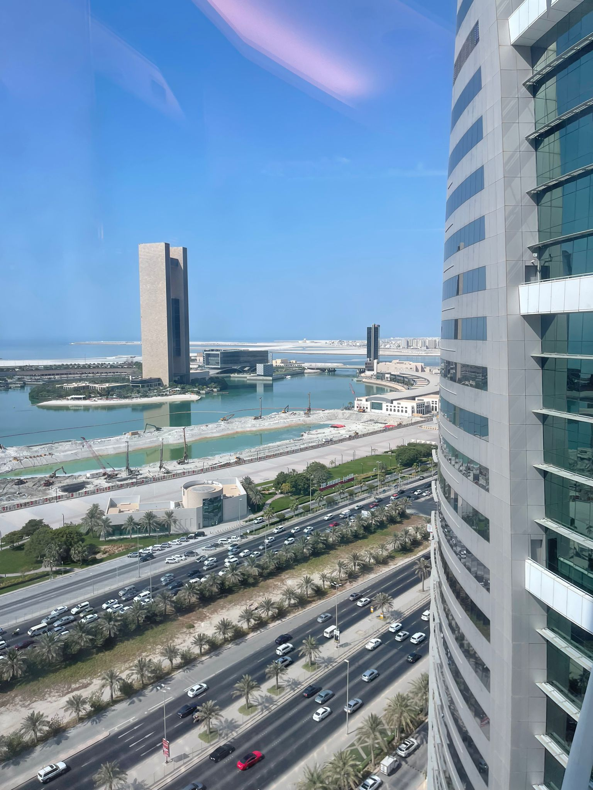

HOME
GALLERY
LIST
DETAILS

Bahrain .. The Land of Civilaziations
Landmarks of Bahrain
An island of pearls
Bahrain is an Arab nation located in a bay on the Arabian Gulf's western shore. Bahrain Island and about 30 smaller islands make up the archipelago.Bahrain, though situated in one of the world's major oil-producing regions, only has modest petroleum supplies on hand. Instead, its economy has long been dependent on refining crude oil from nearby nations. More recently, however, the financial, commercial services, and communications industries have experienced significant growth, as has tourism.
Experience the Culture
Bahrain is home to a number of museums, including the Bahrain National Museum and Beit al-Qur'aan, which contains a sizable collection of Qur'aan manuscripts, some of which date back to the seventh century. Al Khamis Mosque is famous for being the oldest mosque in the country which goes back to the seventh century shows the depth of the culture. there are also museums dedicated to the history of pearl digging and petroleum production.
Their Superior Pearls
Bahraini pearls were formerly and still are renowned across the world for their brilliance, purity, and beauty. Pearls were divided into categories based on their size, shape, color, and luster. The best Bahraini pearls are believed to be the purest and most beautiful in the world because of the proximity of undersea sweet water springs to the oyster beds. Jiwan, the most exquisite pearl, employed extremely precise scales and weights, and the values of the pearls were documented in a unique logbook.